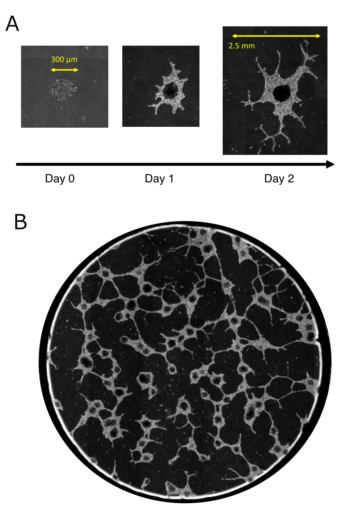
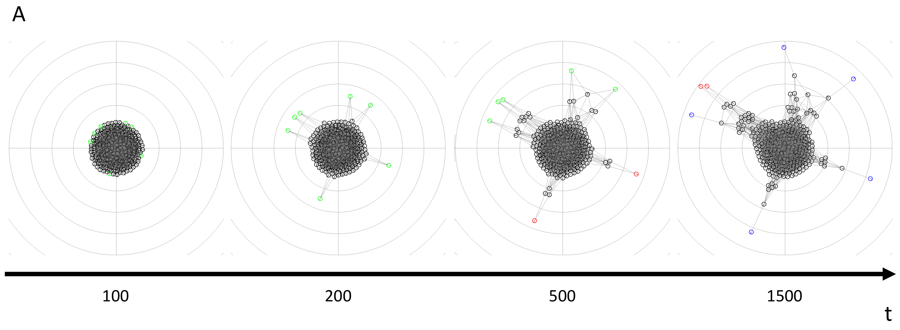
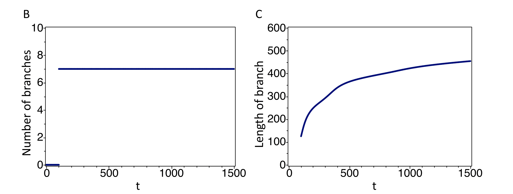

分子通信
研究の概要
分子通信とは、生きた細胞でできたデバイスが、分子を放出、受容して行う通信のことである。 生きた細胞をデバイスとして利用することで、半導体デバイスの場合とは大きく異なる利点のある通信を行うことができる。細胞は、環境中に存在する膨大な数の分子を同時並列的に処理して、必要な情報を抽出する。また、細胞は自律性、運動性、生体互換性、高いエネルギー効率といった性質をもつ。 「細胞塊が作るネットワーク構造」をデバイスとして使用するため、細胞塊の成長の様子をコンピュータシミュレーションで再現し、仕組みを理解する。
細胞塊
細胞塊（細胞スフェロイド）は、細胞が有する細胞接着能を利用して、細胞同士が接着することで形成される三次元の構造体である。作成方法は非接着性の底面を持つ培養プレートを使用し、細胞を培地中で浮遊させ、震盪することで細胞同士を接着させるnon-adhesive surface細胞培養法などがある。 接着性のある細胞を培養する場合、細胞を人工基質上に接着して単層に成長させる接着培養が一般的である。 単層培養細胞と細胞塊では細胞分化による遺伝子発現が異なるため、機能が異なる。細胞塊では細胞間相互作用が増強することにより細胞機能が亢進するため、in vitroの実験において、単層培養細胞と比較して生体に近い結果が得られると報告されてきた。また、生体内への細胞移植においても、単層培養細胞と細胞塊では移植後の機能が異なる。細胞塊は単層培養細胞と比較して移植後の生着率が高い。
細胞塊の成長
下図Aは細胞塊の成長の様子である。数千個の細胞の塊のうち、外側の細胞が枝を伸ばすように徐々に広がっていくのが分かる。細胞塊は個々の細胞が分裂し、移動することで成長する。 また、この細胞塊を複数個並べることによって、図Bのようにネットワーク様の構造が作られることがある。
研究・技術の現状
力学的モデルを作成し細胞塊の動きをシミュレーションした。下図Aのように、１つの細胞塊について、成長の様子を再現することができている。図Bは枝の数、図Cは枝の長さの平均の時間変化を示している。
 今後の展望・その研究にどんな夢があるのか
本研究の長期目的は、細胞を用いたICTデバイスの開発に資する細胞塊ネットワーク構築技術を確立することである。細胞単体の信頼性は低く、細胞単体で高度な機能を実現することは難しい。しかし、細胞同士が接着した細胞塊や、細胞塊同士を相互接続した細胞塊ネットワークは、信頼性のある高度な機能を実現できる。例えば、いくつかの細胞塊が特定の分子信号を検出することで環境情報を収集し、別の細胞塊は収集された環境情報を集約したり、集約された情報にもとづき薬剤などの特定の高分子を産生したりして、ネットワークを構成する細胞塊が必要な仕事を分担できる。また、一部の細胞塊が損傷した場合でも、残りの細胞塊同士の接続性は維持され、周囲の細胞が分裂することで失われた接続性を自己修復できる。さらに、バイオナノテクノロジー分野で開発が進められている生体・非生体インタフェースを利用できるようになると、生体内に構築する細胞塊ネットワークと生体外に構築されたインターネットを相互接続できるようになり、生体内の細胞や分子レベルの情報をインターネットで共有したり、インターネット側から生体内環境を操作できるようになる。